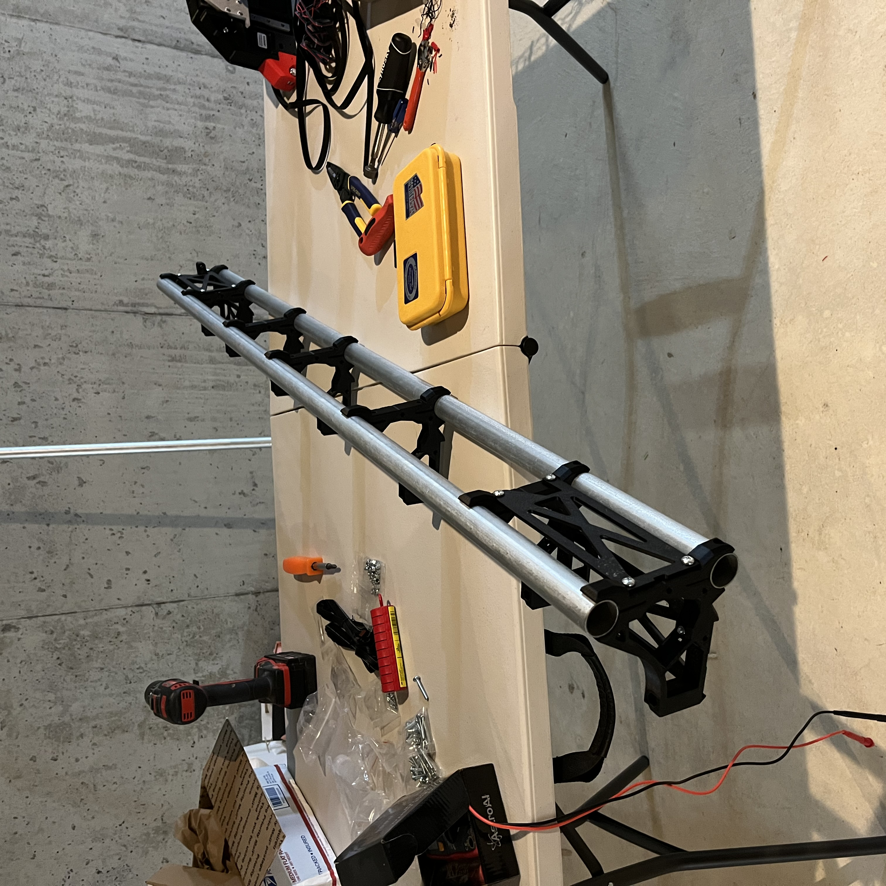
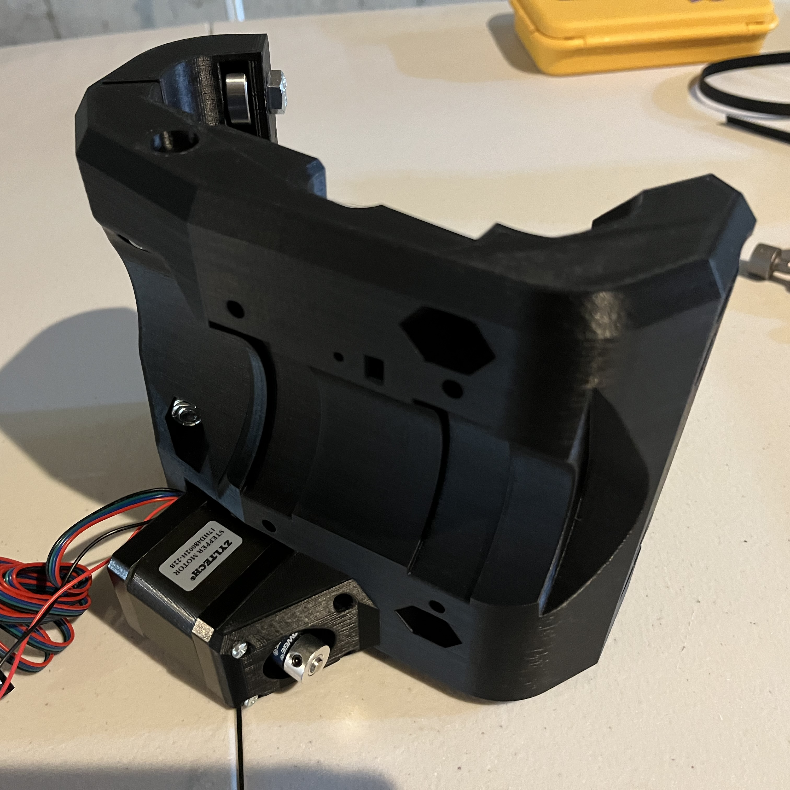
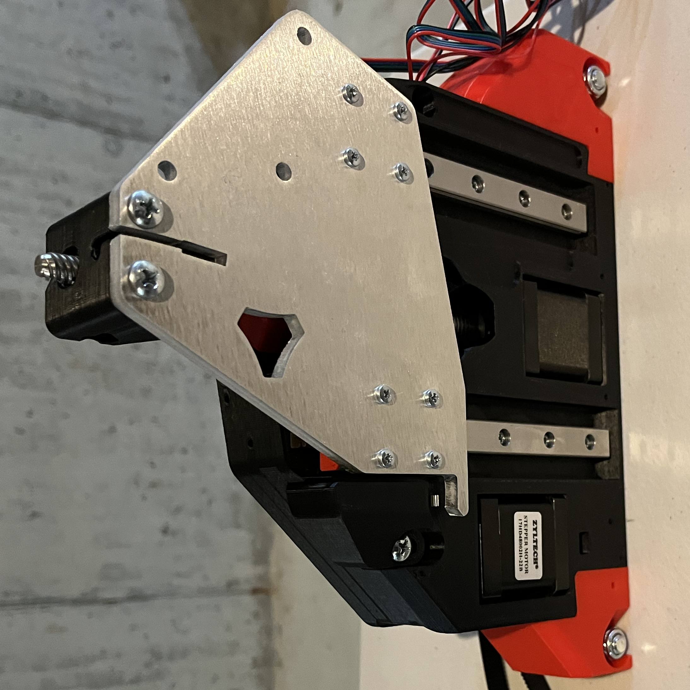

This past weekend, I started assembing my CNC machine. This page is less a post-mortem, since I'm not done yet, and more of a progress report. I've built 4 of the 5 main assemblies of the CNC (X axis beam, Y-Z axis blocks on the left & right, and core assembly that holds the router itself, with the Y axis beam still remaining to go).

Of course, this is a deceptive measurement, since a lot of the work on the CNC happens when it's technically "put together" in the form of tuning, troubleshooting, setup, etc. However, I'm overall pretty pleased with the amount of progress I've made.

The 3D printed parts in these photos have all been printed by me using files from V1 Engineering. I'm very happy with how they came out: My 3D printer is, for the first time in a while, well-tuned, not suffering from any specific problems, and being run at a reasonable speed (I generally go very fast for other projects where dimensional accuracy matters less). This, combined with the well-designed original files, has resulted in 3D printed parts that have that elusive quality of "just working" with reliability comparable to a purchased part.

My next step in the assembly process here is to attach everything to the X axis beam (top picture). I'm still finishing up the last couple 3D prints (some mounts to attach the whole thing to a table and a box to hold the electronics); once they're done, I'll assemble the beam and then probably shift my focus to making a table, since a CNC isn't very useful without a surface to use it on. I plan for this table to include nice features like an easy way to attach/remove the spoilboard and probably some form of built-in storage, though storage might be as simple as a shelf halfway between the table's surface and the ground. I also need to purchase or otherwise acquire a router in the near future.
I might put up a post about deciding on a router if it's sufficiently interesting, but if the decision process is straightforward, I'll probably skip it. Either way, I'll definitely chronicle the construction of the CNC table here, and then I hope to have the CNC mounted to the table and running shortly after the table itself is done.